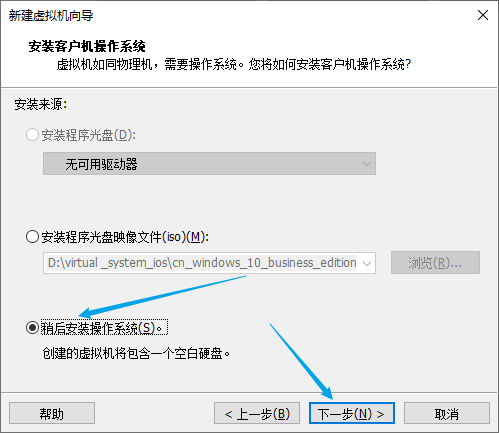
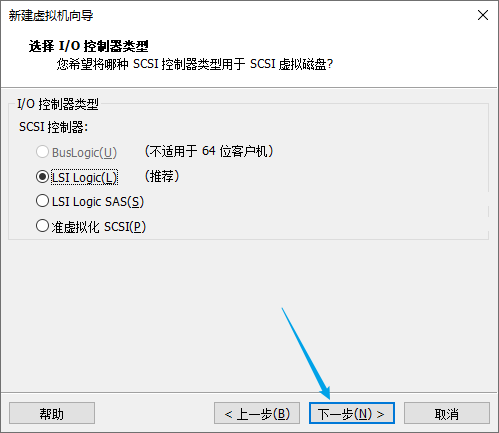

CentOS图文安装教程

文章目录
CentOS是免费的、开源的、可以重新分发的开源操作系统。全名为“社区企业操作系统（Community Enterprise Operating System）”，提供长期免费升级和更新服务，自由使用。国内最大的服务器操作系统，现在基本所有的互联网公司后台服务器都采用CentOS
安装前准备
VMware的安装本文不再介绍，参考上一篇文章 VMware下载安装
下载镜像文件
官方下载地址：Download
开始安装
一、文件 → 新建虚拟机 或 直接点击 创建新的虚拟机 图标
二、选择 自定义（高级），下一步

三、默认，下一步
四、选择稍后安装系统

五、选择操作系统和版本
六、输入虚拟机名称和安装路径
七、向你的电脑借点处理器
八、借内存
九、选择网络类型
十、默认推荐，下一步

十一、默认推荐，下一步
十二、默认，下一步
十三、借硬盘
默认磁盘大小是20G，我这里给了50G
十四、给磁盘文件取个名字，默认即可
十五、自定义硬件

十六、选择CentOS安装镜像文件
十七、点击完成
初始化配置
一、启动
二、选择第一项，Install CentOS 7，回车，等待
这里需要将鼠标点进页面呢，通过键盘上下键进行选择
三、选择安装语言，我这里选择的是简体中文
四、软件选择，选择安装方式
五、选择安装方式
我这里选择的是GNOME 桌面，进行安装。
六、安装位置配置
七、设置安装位置，配置分区
八、手动设置分区，也可以自动创建它们
我这里选择的挂载方式是标准分区，当然也可以直接使用默认LVM挂载方式，然后自动创建分区
九、设置网络和主机名
十、开始安装
十一、安装系统的同时设置root用户密码，同时也可以创建一个普通用户
十二、等待，完成安装，重启设备
十三、接受许可协议（最小化安装请忽略）
十四、开始使用
如果你是最小化安装，会直接进入终端，让你输入用户名，密码（密码为暗文，不显示）
进入系统，经过简单的配置，右键，打开终端
输入命令ip a查看本机ip地址
输入命令ping www.qq.com测试是否联通外网
文章作者 Pure3417
上次更新 2023-02-18